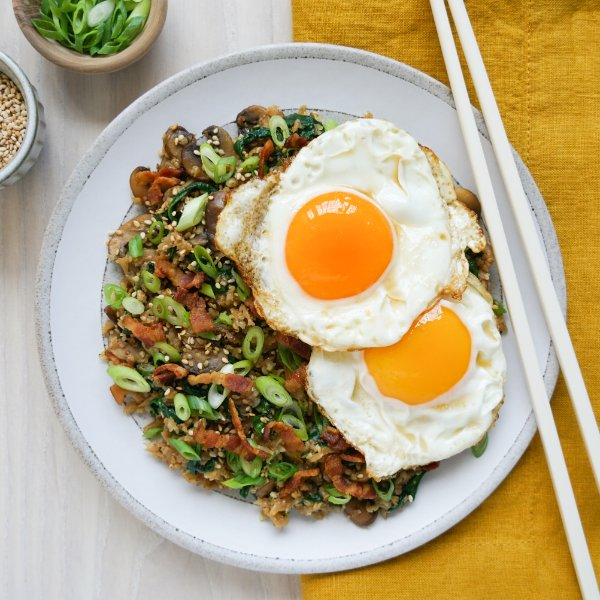

Fried Cauliflower Rice with Bacon, Spinach, Mushrooms & Eggs

Total Time
35 min
Nutrition (Per Serving)
583.9 kcalCalories
28.6 gProtein
22.8 gCarbs
44.2 gFat
Full nutrition table
| Calories | 583.9 kcal |
| Total fat | 44.2 g |
| Saturated fat | 12.3 g |
| Trans fat | 0.1 g |
| Cholesterol | 364.3 mg |
| Sodium | 585.7 mg |
| Carbohydrates | 22.8 g |
| Fiber | 6.5 g |
| Sugars | 8.8 g |
| Protein | 28.6 g |
| Potassium | 1587.8 mg |
| Calcium | 178.2 mg |
| Iron | 5.1 mg |
| Vitamin A | 754.9 IU |
| Vitamin C | 86.8 mg |
| Vitamin D | 84.5 IU |
Cookware
Ingredients
- 1 (5 oz) pkgbaby spinach
- 8 slicesbacon
- 1 medium headcauliflower
- 1 lbcremini mushrooms
- 8eggs
- 4 clovesgarlic
- 2 (1 inch) piecesginger root
- 1 small bunchgreen onions (scallions)
- pure maple syrup
- salt
- sesame seeds
- soy sauce
- toasted sesame oil
Steps
- Wash and dry the fresh produce. (Skip the spinach if it came pre-washed.)1 medium head cauliflower
1 lb cremini mushrooms
1 small bunch green onions (scallions)
2 (1 inch) pieces ginger root
1 (5 oz) pkg baby spinach - Preheat a large skillet over medium-high heat.
- While the skillet heats up, small dice bacon.8 slices bacon
- Once the skillet is hot, add bacon and cook, stirring occasionally, until crispy, 4-5 minutes. Using a slotted spoon, remove crispy bacon to a paper towel-lined plate; set aside. (Reserve skillet with drippings for later use.)
- Using a clean cutting board, cut the cauliflower head into quarters, then trim off and discard the leaves and thick stem. Using a box grater or food processor, coarsely grate the cauliflower and place in a medium bowl; set aside.
- Thinly slice mushrooms.
- Return skillet (with drippings) to medium-high heat. Add mushrooms and cook, stirring occasionally, until softened, about 5 minutes.
- Meanwhile, trim and cut green onions crosswise into thin pieces. Add half to the bowl with the cauliflower and set the other half aside for garnish.
- When the mushrooms are soft, add cauliflower, green onion, and oil to the skillet. Cook, stirring occasionally, until cauliflower is soft and beginning to brown, about 5 minutes.2 tsp toasted sesame oil
- Meanwhile, peel and mince ginger and garlic. Place both in a small bowl along with soy sauce and maple syrup; whisk to combine the sauce.4 cloves garlic
3 tbsp soy sauce
2 tsp pure maple syrup - When the cauliflower is done, add spinach to the skillet in handfuls, waiting for the spinach to wilt slightly before adding the next handful. Add sauce, stir to combine, and continue to cook until heated through, about 30 seconds. Remove from heat and cover to keep warm.
- Preheat another large skillet over medium-high heat.
- Once the skillet is hot, add additional oil and swirl to coat the bottom. Working in batches if necessary, gently crack eggs into the skillet and cook until the tops of the whites are set but the yolks are still runny, about 4 minutes. Remove from heat and season with salt.4 tsp toasted sesame oil
8 eggs
¼ tsp salt - To serve, divide cauliflower rice and eggs between plates. Garnish rice with crispy bacon, reserved green onion, and sesame seeds. Enjoy!¼ cup sesame seeds